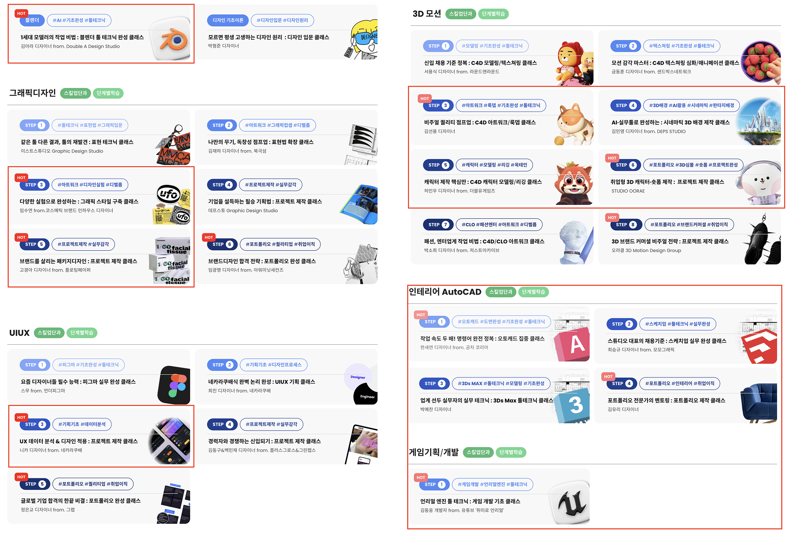

맞춤 제안으로 크리에이터 협업을 만들고 클래스를 출시했습니다
작품에 대한 구체적인 감상을 담아 여러 차례 제안했습니다. 초록담쟁이와 이가람의 협업이 성사됐고 수업 구성부터 가격과 상세페이지 기획까지 맡아 출시로 연결했습니다.
- 상황
- 팬층을 갖춘 크리에이터가 필요했지만 연락과 협업 제안에 응답을 받기 어려웠습니다.
- 내 책임
- 후보 발굴과 섭외부터 커리큘럼 협의와 가격 설정 및 상세페이지 기획을 담당했습니다.
- 바꾼 점
- 작품을 직접 선정하고 감상을 담은 맞춤 제안으로 협업을 설득했습니다.
- 확인한 결과
- 초록담쟁이와 이가람 협업 후 출시. 두 회사의 신규 클래스 47개를 기획하고 출시했습니다.
응답을 얻기 위해 작품부터 이해했습니다
초록담쟁이와 이가람에게는 다섯 번 이상 연락했습니다. 마음에 드는 작품을 하나씩 골라 어떤 점이 좋았는지 제안에 담았습니다. 크리에이터의 작업을 이해하고 있다는 점을 구체적으로 전달했습니다.
- 01작품 이해
좋아하는 작품을 직접 골라 구체적인 감상을 정리
- 02맞춤 협업 제안
여러 차례 연락하며 함께 만들 수업을 제안
- 03상품 기획
크리에이터와 커리큘럼 협의 후 가격과 상세페이지 기획
- 04제작과 출시
제작 부서와 일정을 조율하고 클래스 출시
클래스101과 블루타이거에서 각각 400명 이상을 발굴하고 연락했습니다. 이 숫자는 계약자 수가 아닌 연락한 후보 수입니다.
고객이 배우려는 내용을 수업으로 구성했습니다
초록담쟁이 작품의 댓글에서 관심을 살피고 크리에이터와 커리큘럼을 구성했습니다. 기존 초급 과정과 다른 중급 수요는 이가람과 인디 클래스로 탐색했습니다.
첫 오일파스텔 클래스는 작가의 표현 능력에 집중했지만 고객은 얼굴을 그리는 방법을 궁금해했습니다. 판매가 기대에 미치지 못한 이후에는 수강생이 배우고 싶은 내용을 더 확인하며 기획했습니다.
기획과 제작의 역할
저는 섭외와 커리큘럼 협의 이후 가격과 상세페이지를 기획하고 출시를 조율했습니다. 작품과 강의는 크리에이터가 제작했습니다. 촬영과 편집 및 마케팅은 관련 부서와 협업했습니다.
출시한 콘텐츠와 확인한 성과
신규 기획과 출시
클래스101 31개 / 블루타이거 16개
클래스101 담당 클래스 누적 매출
2021.08–2022.06 / 환불 제외
초록담쟁이 클래스는 2021년 드로잉 부문 대상을 수상했습니다. Amplitude에서 기존 20~30대 여성 중심 고객층과 다른 40~50대 여성 고객의 유입을 확인했습니다. 담당 매출은 제작과 판매에 협업한 크리에이터 및 관련 부서의 결과를 포함합니다.

